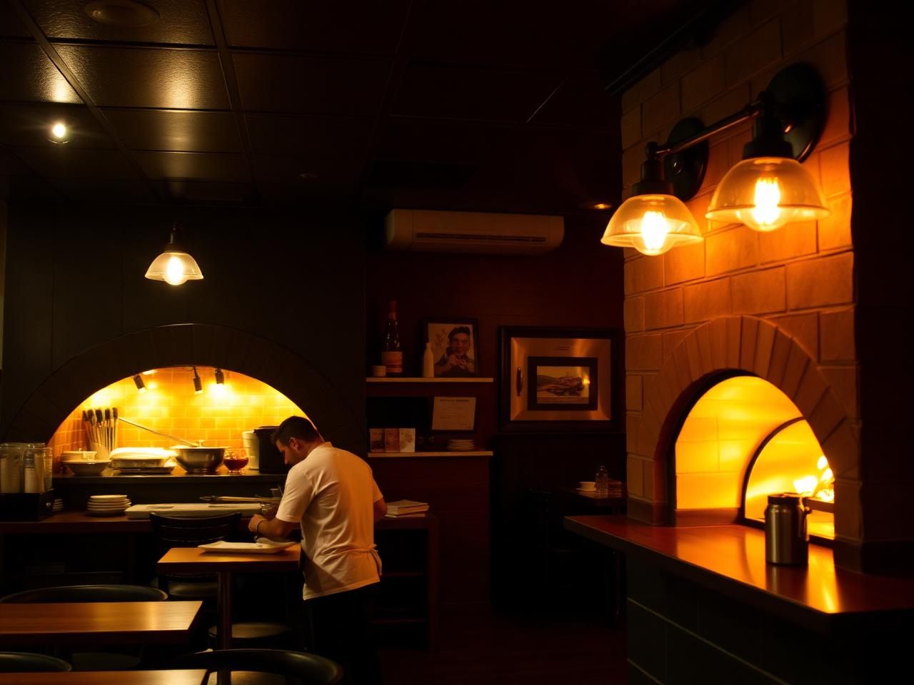
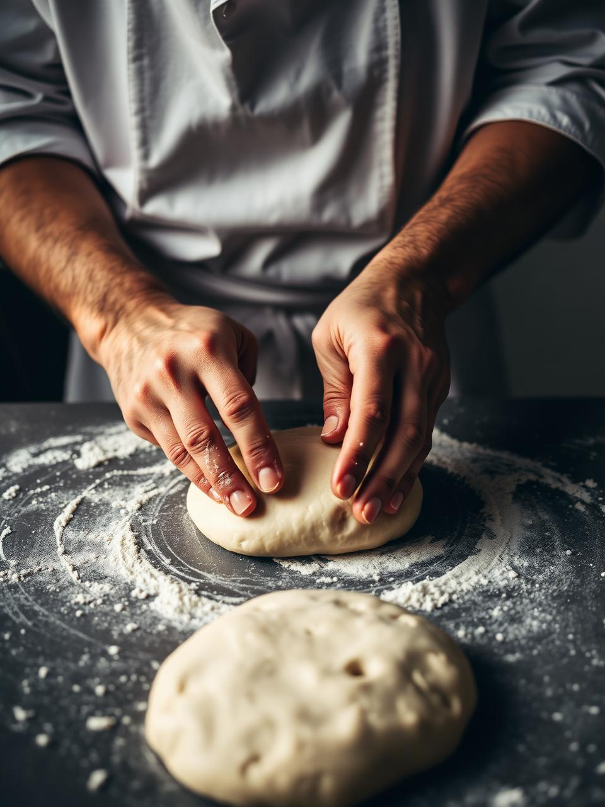

Chef Ndiaye
Chef pizzaïolo — 12 ans de four à bois.
Tout a commencé dans une petite cuisine d'Akwa, avec un four, une recette de pâte et l'envie de partager la vraie pizza avec Douala.
En 2019, trois amis passionnés de cuisine italienne décident de pétrir leur première pâte. Aujourd'hui, PizzaMood prépare chaque jour des dizaines de pizzas à la commande, avec une pâte fermentée 24 heures et des produits achetés le matin même au marché.
Notre promesse est simple : jamais de raccourci sur la qualité. Une sauce tomate maison, une mozzarella fondante et une cuisson au feu de bois qui donne à la croûte ce léger goût fumé que l'on ne peut pas imiter.
L'équipe PizzaMood.
Farine sélectionnée, eau, levure et temps. Rien d'autre.
Légumes, herbes et fromages choisis chaque matin.
480 °C au feu de bois, 90 secondes de cuisson.
Chef pizzaïolo — 12 ans de four à bois.

Pétrissage et façonnage chaque matin à 6h.
Un lieu chaleureux pour partager une part.
Découvrez notre carte ou passez nous voir à Akwa, tous les jours de 10h à 23h.
Voir le menu